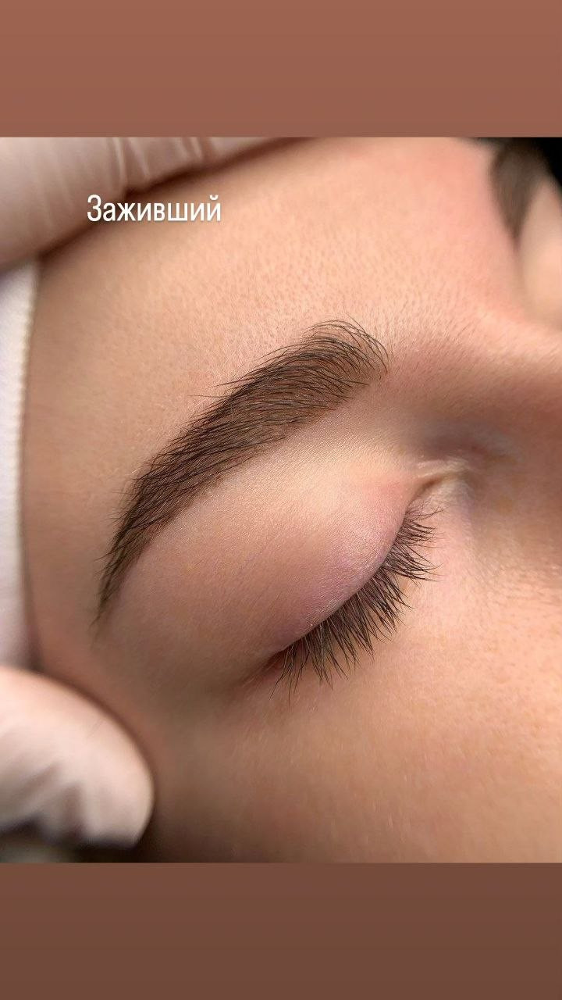
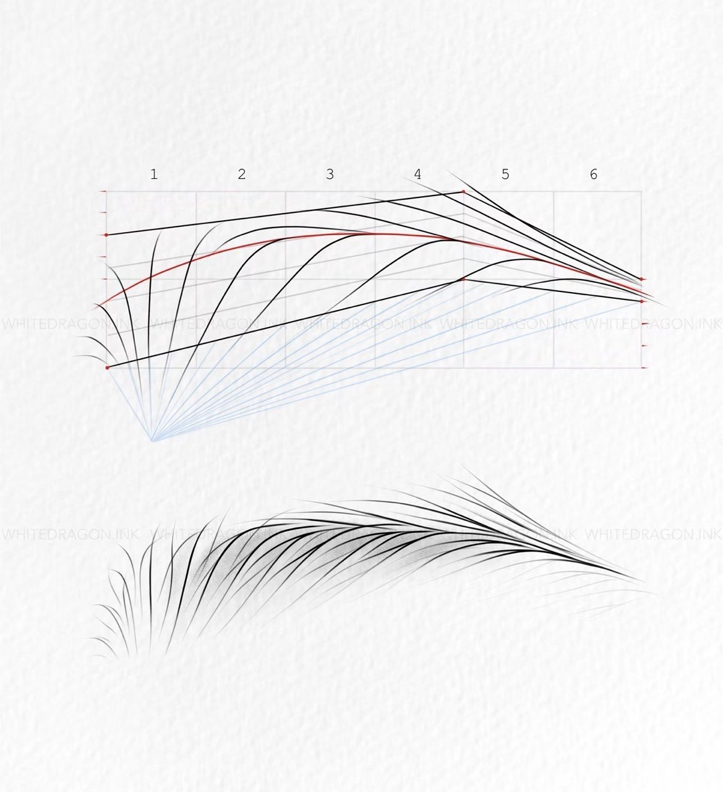
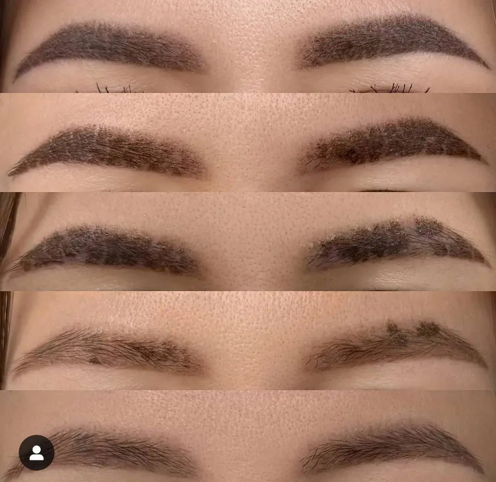
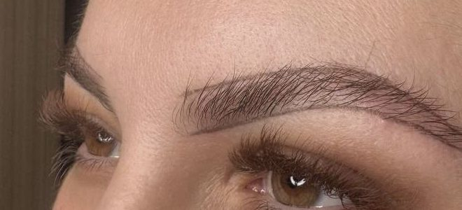
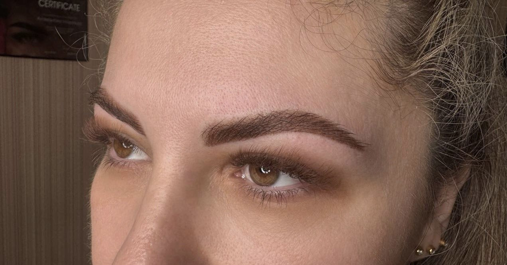
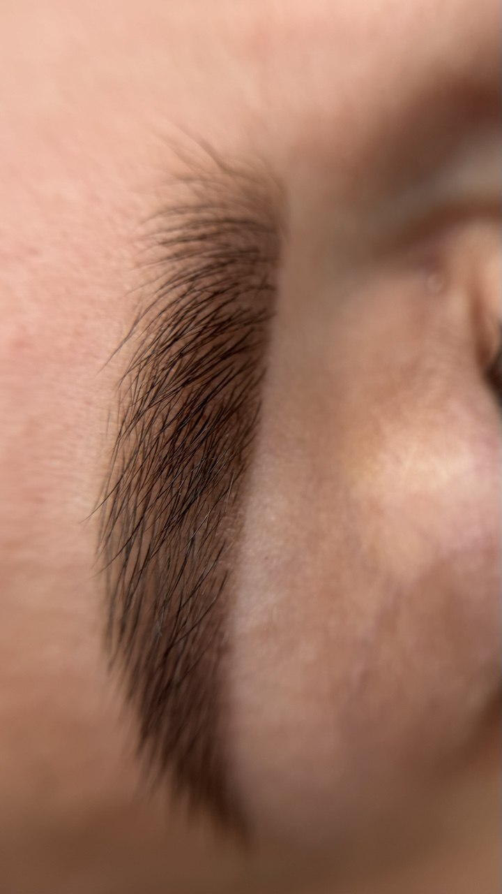

Татуаж и перманентный макияж бровей в Ростове-на-Дону
Пудровое напыление или волоски. Форму строю по пропорциям вашего лица, чтобы брови не нужно было рисовать каждое утро

Какую технику выбрать
Пудровое напыление
Мягкая тень, как от карандаша или теней. Брови выглядят аккуратно накрашенными и не требуют макияжа
Волоски +2 000 ₽
Тонкие штрихи, похожие на настоящие волоски. Подходит, если хочется максимально естественно
Не знаете, что подойдёт? Пришлите фото без макияжа, подскажу. Окончательно выбираем вместе на процедуре

Сначала эскиз
Форму не беру «из головы». Строю эскиз по пропорциям вашего лица, рисую его карандашом и показываю в зеркале. Можно поправить, пока не понравится. Только потом начинаем
Как заживают брови
Сразу после цвет насыщенный и яркий. На 3-4 день начинается шелушение, на 6-7 оно активное, к 8-10 дню брови отшелушиваются, а к месяцу цвет проявляется полностью

Мои работы

до
после
Цена по этапам
Брови
Коррекция стоит дешевле, если прийти в течение 2 месяцев. Позже она стоит как первичная процедура. Я напомню, когда подойдёт срок
Противопоказания: кому нельзя
- беременность
- воспалительные заболевания в острой форме
- герпес в зоне перманента
- псориаз в зоне перманента
- конъюнктивит (для век)
- склонность к келоидным рубцам
- сахарный диабет, инсулинозависимая форма
- низкая свёртываемость крови (гемофилия)
- приём препаратов, разжижающих кровь
- приём ретиноидов
- нарушения иммунной системы, ВИЧ, СПИД
- гепатит B
- онкология
- склеродермия
- эпилепсия
- психические расстройства
- алкогольная или наркотическая интоксикация
Сомневаетесь - напишите мне, разберёмся до записи
Вопросы про брови
Это больно?
Нет. Я использую анестезию, ощущается лёгкое покалывание. Клиентки у меня правда засыпают на процедуре
Сколько держится?
Обычно 1,5-2 года, потом цвет постепенно светлеет. Освежить можно обновлением через 1-1,5 года. Плотные и яркие работы держатся дольше
Зачем нужна коррекция?
Кожа заживает по-разному, и часть пигмента может уйти. Коррекция через 1-2 месяца закрепляет цвет и доводит форму
Что будет с моими бровями после перманента?
Свои волоски остаются, пигмент вносится в кожу под ними. Брови выглядят гуще и аккуратнее, а форму больше не нужно дорисовывать
Перманент только для молодых?
Нет. Я работаю с девушками и женщинами любого возраста. Перманент помогает и тогда, когда брови поредели или контур губ стал менее чётким
Сколько длится процедура?
1,5-2 часа на любую зону. Сначала рисую эскиз и показываю цвет, начинаем, когда вам всё понятно
Напишите мне, можно сразу с фото. Подскажу технику и цвет, подберём удобный день. Приём по записи, 30-40 минут от центра Ростова
Записаться